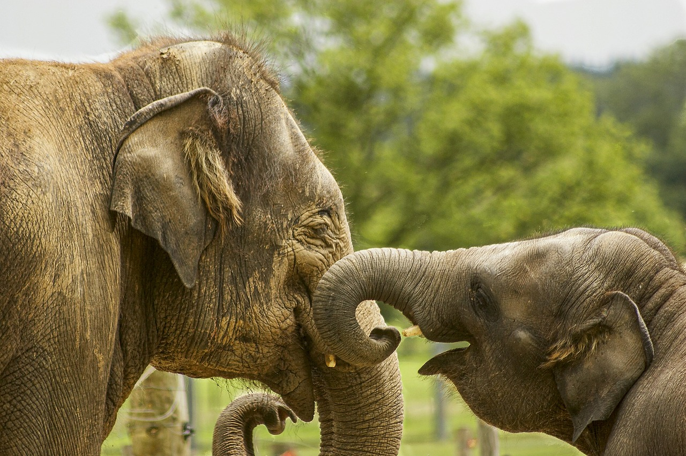
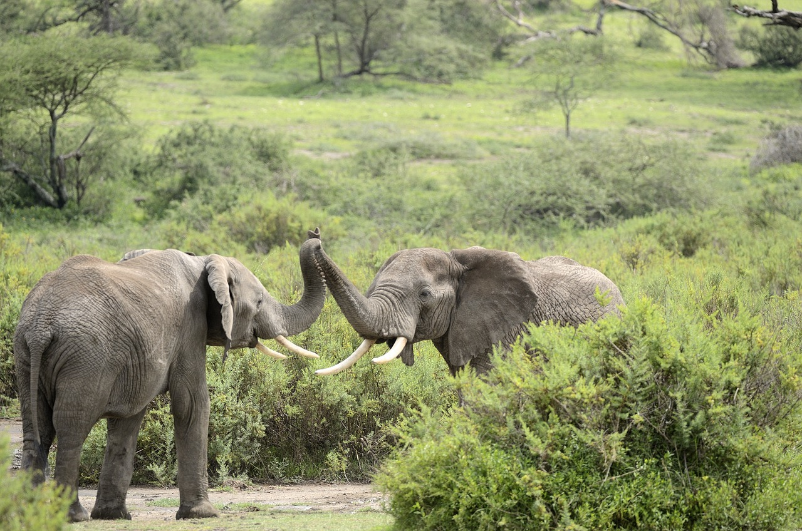

¿Qué son los paquidermos?

Los paquidermos son un antiguo orden de mamíferos placentarios, que agrupaba los elefantes, rinocerontes y tapires, jabalíes e hipopótamos y manaties
Los paquidermos, como su nombre indica, tienen en común la posesión de una piel muy gruesa y con poco pelo, además de un gran tamaño y elevado peso; características todas ellas fruto de la convergencia evolutiva.
¿Quién es Boboli?
El es Boboli, un paquidermito orejón y bonito caminando felizmente, y es un paquidermito como Criko, gracias a él, nuestra página de paquidermos, se basará sólo en elefantes, porque es Boboli, un paquidermito
Informacion detallada
-
Tamaño

Los elefantes son los animales terrestres más grandes que existen, el elefante más grande que se ha cazado, de los que se tiene registro, pesó alrededor de 11 000 kg y midio 3,96 m.
-
Edad
Normalmente viven de cincuenta a setenta años, pero registros antiguos documentan edades máximas de ochenta y dos años.
-
Cerebro
Su cerebro pesa alrededor de 5kg, es muy listo, gracias a él tiene comportamientos como el duelo, altruismo, la adopción, compasión y uso de herramientas.
Habitat
Los elefantes de los bosques africanos habitan la densa selva tropical de África occidental y central, mientras que los elefantes de la sabana africana habitan principalmente en las sabanas boscosas y los pastizales del África subsahariana.